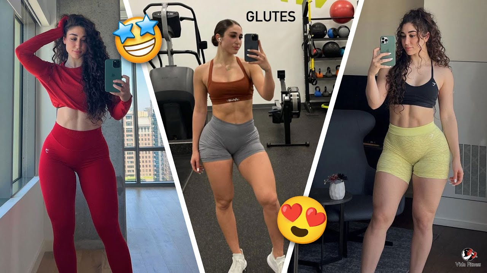

R.MENU
Hay vida mas alla del aburrido abdominal basico para lucir tableta y despedir la grasa extra. Proxima parada: 'six pack'.
Los abdominales son una de las zonas del cuerpo mas complicadas de marcar. Es importante cuidar la dieta y mantener la
disciplina en cuanto a la practica de ejercicio. No hace falta una preparacion de atleta olimpico, pero hay que trabajar para
marcar tableta.
Por supuesto, el cardio es una parte muy importante para perder grasa y alcanzar el ansiado 'six pack', pero los ejercicios de
musculacion son la clave para conseguir unos abdominales de hierro. Rescata el equipamiento deportivo o pon rumbo al
gimnasio, es momento de sudar la camiseta.
No podemos asegurar si esta es la rutina de abdominales que utiliza CR7 para mantener un abdomen bien tonificado,
pero te aseguramos que si eres capaz de realizar 3 veces a la semana estos ejercicios, en poco mas de un mes ya
notaras los primeros resultados.
Eso si, debes tener bien claro que estos ejercicios te ayudaran a tonificar tu core pero no a eliminar la grasa localizada,
es decir, si quieres marcar abdominales tambien deberas reducir tu peso corporal con un entrenamiento especifico para
quemar grasas y adelgazar.
A continuacion incluimos los 11 ejercicios de abdominales que recomiendan nuestros tecnicos del DiR. Puedes realizar
3 series de 15 repeticiones en cada ejercicio, y en los que son isometricos (estaticos), puedes hacer 3 sesiones de entre
20 y 30 segundos cada una (ejercicios 9 y 11):
Tumbado en el suelo completamente, sin separar las piernas del suelo y haciendo fuerza con el abdomen hay que levantarse hasta llegar a los 90º con las piernas, la posicion de los brazos es libre.
Con las piernas elevadas aproximadamente a 90º, intenta tocar la punta de los pies con las manos.
Igual que el sit up original pero con el handicap de utilizar material pesado, en este caso un balon medicinal.
Con el cuerpo totalmente tumbado en el suelo y las manos en la zona lumbar (impidiendo la curvatura con la realizacion de este ejercicio) levanta las piernas totalmente estiradas hasta llegar a los 90º, al bajar, dependiendo de tu nivel, puedes tocar o no en el suelo.
Solo toca el suelo la espalda, los brazos y la parte alta del coxis. Haciendo fuerza con el abdomen, separa la parte baja de la espalda del suelo y vuelve a la posicion inicial.
Boca abajo con los brazos estirados y las manos apoyadas en el suelo, situa los pies en los glidigns y el movimiento se inicia con las piernas totalmente estiradas y se acercan las rodillas al pecho.
Boca arriba con las manos en la nuca y las piernas elevadas, lleva los codos a tocar la rodilla de la pierna contraria, vuelve a la posicion inicial y repite el movimiento a la inversa.
Situado con el coccix y las manos como unica superficie de contacto con el suelo, estira el cuerpo y flexionalo pasando por un lado del foam cada vez.
Posicion de plancha abdominal con la particularidad de colocar los antebrazos en la fitball.
Este ejercicio es una mezcla entre un sit up con pelota y las elevaciones de las piernas, con la particularidad de ir pasando el balon de las piernas a los brazos y viceversa.
Codos y rodillas apoyados en una fitball intentando hacer el maximo de fuerza posible durante el maximo tiempo.

Esperamos que seas capaz de superar todos estos ejercicios para tonificar tus abdominales. Recuerda que tambien puedes ejercitar el core y las principales partes del cuerpo en las Sesiones Funcionales Express que se realizan en las salas de fitness de todos los Clubs DiR, ¡la mejor actividad para ejercitarte en solo 15 minutos!